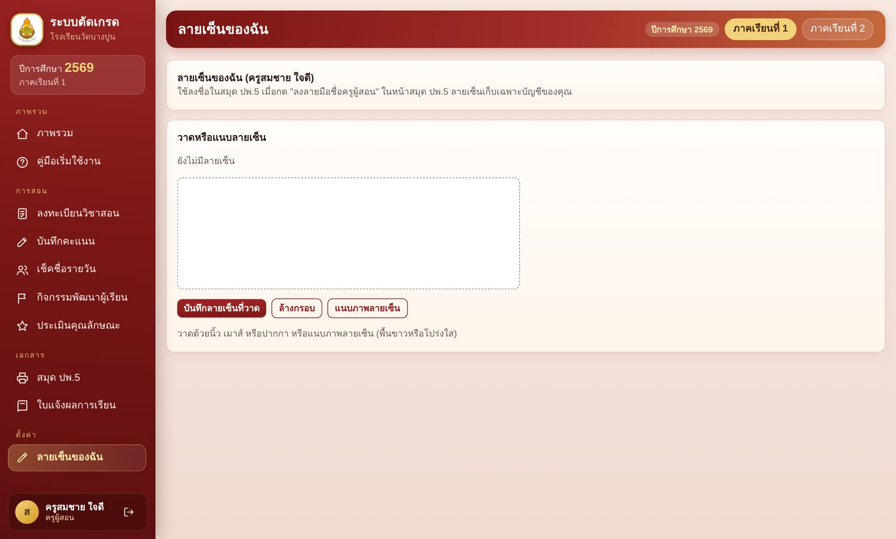
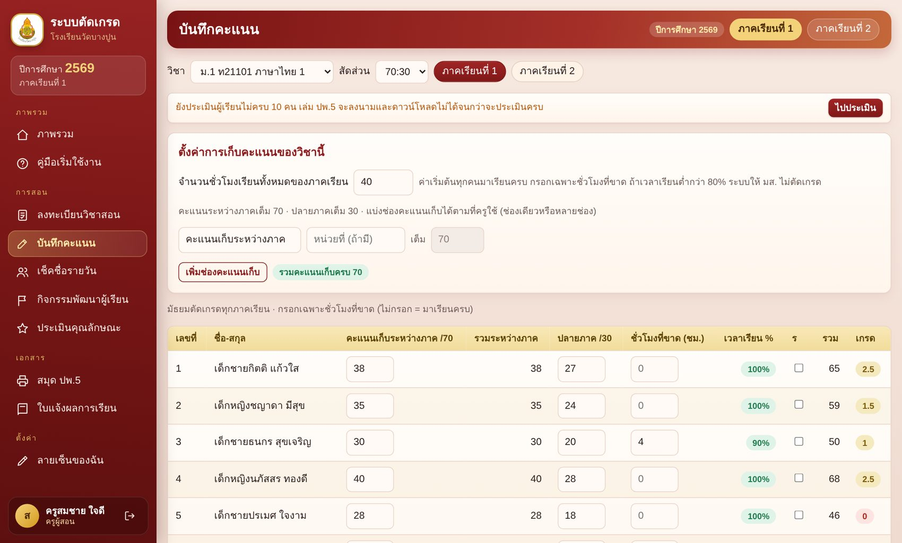
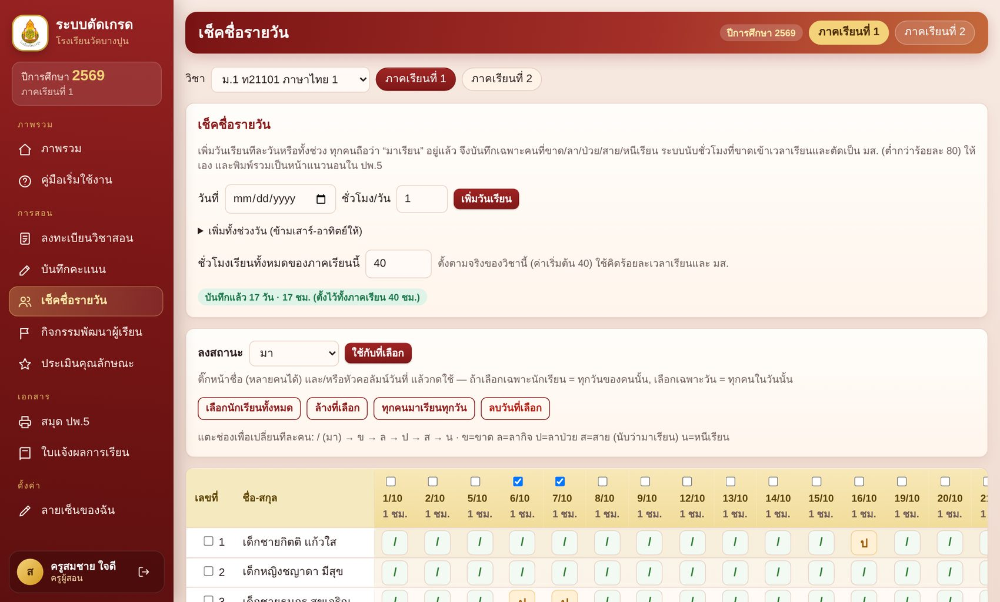
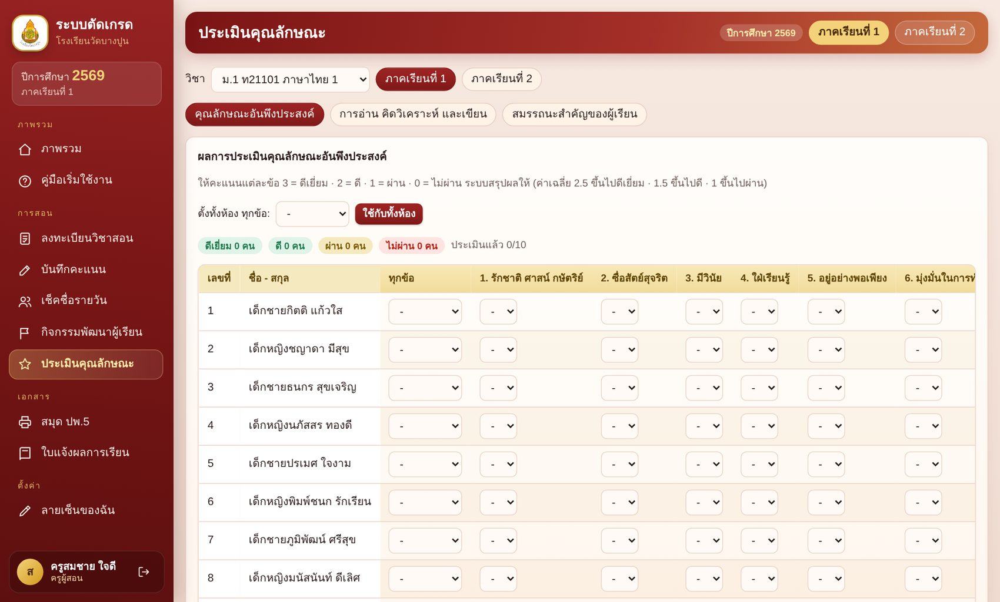
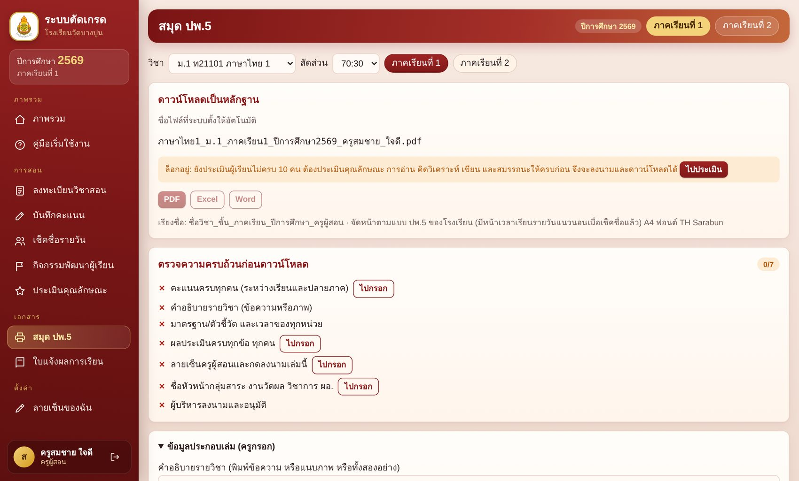

อบรมการใช้ระบบตัดเกรด
สำหรับครูผู้สอน ป.1–ม.3 · ทำตามไปทีละขั้น
ใช้ได้ทั้งคอม โน้ตบุ๊ก iPad
ไม่ต้องติดตั้งโปรแกรม
ออกเล่ม ปพ.5 ได้เอง
โรงเรียนวัดบางปูน · สพป.สิงห์บุรี · ปีการศึกษา 2569
พัฒนาโดย ครูซอสสอนสังคม
วันนี้เราจะทำอะไรกัน
เริ่มจากเตรียมตัว แล้วลงมือทำจริงทีละขั้น
1
เตรียมก่อนอบรม
อุปกรณ์ ข้อมูลที่ครูต้องนำมา และสิ่งที่โรงเรียนต้องพร้อม
2
ลงมือทีละขั้น
7 ขั้นในบทบาทครู ตั้งแต่เข้าระบบจนได้เล่ม ปพ.5
3
กติกาและถามตอบ
เกณฑ์เกรด มส. และปัญหาที่พบบ่อยพร้อมวิธีแก้
+
ภาคผนวก
สำหรับผู้ติดตั้งระบบ: GitHub + Vercel และเครื่องมือที่ต้องมี
ระบบตัดเกรด · อบรมครูผู้สอน
กดการ์ดเพื่อข้ามไปหน้านั้นได้
2 / 24
ทำความรู้จักระบบ
ระบบนี้ทำงานอย่างไร: ครูแค่เปิดเว็บ
ที่ 1
GitHub
ที่เก็บไฟล์ของระบบ ผู้ดูแลอัปโหลดไฟล์ใหม่ที่นี่
ที่ 2
Vercel
นำไฟล์ขึ้นเป็นเว็บให้ทุกคนเปิดได้ด้วยลิงก์เดียว
ที่ 3 · ครูอยู่ตรงนี้
เว็บระบบตัดเกรด
เปิดด้วย Chrome หรือ Safari แล้วล็อกอินใช้งาน
ที่ 4
Firebase
เก็บบัญชี คะแนน ข้อมูลนักเรียน บันทึกให้เองทุกครั้งที่กรอก
ครูไม่ต้องติดตั้งโปรแกรม ข้อมูลอยู่บนเว็บ เปิดจากเครื่องไหนก็เห็นข้อมูลเดิม
ต้องออนไลน์ตลอด ถ้าเน็ตหลุดให้รอให้กลับมาก่อนกรอกต่อ
ระบบตัดเกรด · อบรมครูผู้สอน
3 / 24
1
เตรียมก่อนอบรม
อุปกรณ์ ข้อมูลที่ต้องนำมา และสิ่งที่โรงเรียนต้องพร้อม
4 / 24
ตอนที่ 1 · เตรียมก่อนอบรม
อุปกรณ์ที่ต้องเตรียมมา
คอมพิวเตอร์ หรือโน้ตบุ๊ก
สะดวกที่สุด จอใหญ่ ใช้ลูกศรเลื่อนช่องคะแนนได้ และพิมพ์ PDF ได้โดยตรง
แนะนำให้ชาร์จเต็มและนำสายชาร์จมาด้วย
iPad หรือแท็บเล็ต
ใช้ได้ครบทุกเมนู วาดลายเซ็นด้วยนิ้วหรือปากกา Apple Pencil ได้สะดวก
แป้นพิมพ์บนจอไม่มีปุ่มลูกศร ใช้ Tab หรือ Enter เลื่อนช่องแทน
อินเทอร์เน็ตและเบราว์เซอร์
Wi-Fi ที่เสถียร และเบราว์เซอร์รุ่นล่าสุด: Chrome, Edge หรือ Safari
ไม่ต้องติดตั้งโปรแกรมใดเพิ่ม
เคล็ดลับ: ถ้ามีเมาส์ต่อกับโน้ตบุ๊ก การกรอกคะแนนและกดเมนูจะเร็วขึ้น
ระบบตัดเกรด · อบรมครูผู้สอน
5 / 24
ตอนที่ 1 · เตรียมก่อนอบรม
ข้อมูลที่ครูนำมาด้วย
| สิ่งที่ต้องเตรียม | ใช้ทำอะไร |
|---|---|
| ชื่อผู้ใช้และรหัสเริ่มต้น | เข้าสู่ระบบครั้งแรก (ผู้ดูแลระบบแจกให้) |
| รายวิชาที่ตนสอน (ชั้น รหัสวิชา) | ลงทะเบียนวิชาที่สอนในภาคเรียนนี้ |
| โครงสร้างคะแนนของแต่ละวิชา | ตั้งช่องคะแนนเก็บ และสัดส่วนระหว่างเรียน : ปลายภาค |
| คะแนนตัวอย่างของห้อง 5–10 คน | ฝึกกรอกจริงระหว่างอบรม |
| ภาพลายเซ็น (ถ้ามี ไม่บังคับ) | แนบแทนการวาดลายเซ็นในระบบ |
| คำอธิบายรายวิชา มาตรฐาน ตัวชี้วัด | กรอกข้อมูลประกอบเล่ม ปพ.5 |
ระบบตัดเกรด · อบรมครูผู้สอน
6 / 24
ตอนที่ 1 · เตรียมก่อนอบรม
สิ่งที่ผู้ดูแลระบบของโรงเรียนต้องพร้อมก่อนวันอบรม
เว็บระบบเปิดใช้งานแล้ว
ติดตั้งบน GitHub + Vercel เสร็จ เปิดลิงก์แล้วเห็นหน้าเข้าสู่ระบบ
สร้างบัญชีครูทุกคนแล้ว
มีชื่อผู้ใช้และรหัสเริ่มต้น พิมพ์ใบรหัสแจกครู
ปีการศึกษา นักเรียน รายวิชา
เปิดปีและภาคเรียน ใส่รายชื่อนักเรียนครบ เปิดรายวิชาที่สอน
ตั้งค่าโรงเรียนแล้ว
ชื่อและลายเซ็นผู้บริหาร หัวหน้างาน หัวหน้ากลุ่มสาระ
ระบบตัดเกรด · อบรมครูผู้สอน
7 / 24
2
ลงมือทีละขั้น
7 ขั้นในบทบาทครูผู้สอน ทำตามไปพร้อมกันบนเครื่องของตัวเอง
8 / 24
ตอนที่ 2 · ลงมือทีละขั้น
เส้นทาง 7 ขั้นของครูผู้สอน
1
เข้าสู่ระบบ
เปลี่ยนรหัสผ่านครั้งแรก
2
สร้างลายเซ็น
วาดหรือแนบภาพ
3
ลงทะเบียนวิชา
ส่งให้แอดมินอนุมัติ
4
กรอกคะแนน
ตั้งช่อง แล้วกรอก
5
เช็คชื่อรายวัน
ไม่บังคับ
6
ประเมินผู้เรียน
ต้องครบทุกคน
7
สมุด ปพ.5
ลงนามและดาวน์โหลด
ทำครบแล้ว
ได้เล่มพร้อมส่ง
ระบบตัดเกรด · อบรมครูผู้สอน
กดการ์ดเพื่อไปทำขั้นนั้นได้เลย
9 / 24
1
ขั้นที่ 1 จาก 7
เข้าสู่ระบบและเปลี่ยนรหัสผ่าน
เปิดเว็บของระบบ
ใช้ลิงก์ที่โรงเรียนแจก ด้วย Chrome, Edge หรือ Safari แนะนำให้บันทึกเป็นบุ๊กมาร์ก
ใส่ชื่อผู้ใช้และรหัส
ครูใช้ ชื่อผู้ใช้ ที่ได้รับ ไม่ใช่อีเมล พร้อมรหัสเริ่มต้นจากใบรหัส
ตั้งรหัสผ่านใหม่
ครั้งแรกระบบบังคับให้เปลี่ยน ตั้งรหัสที่จำได้และจดเก็บไว้ ไม่บอกผู้อื่น
ลืมรหัสผ่าน? แจ้งผู้ดูแลระบบเพื่อรีเซ็ตให้ แล้วตั้งรหัสใหม่อีกครั้ง
ระบบตัดเกรด · อบรมครูผู้สอน
10 / 24
◀ กลับเส้นทาง 7 ขั้น
2
ขั้นที่ 2 จาก 7
สร้างลายเซ็นของฉัน
1. เปิดเมนู “ลายเซ็นของฉัน”
อยู่ในกลุ่มเมนู “ตั้งค่า”
2. วาดในกรอบ หรือแนบภาพ
ใช้นิ้ว เมาส์ หรือปากกา ภาพควรพื้นขาวหรือโปร่งใส
3. กดบันทึก
วาดผิดให้ “ล้างกรอบ” แล้ววาดใหม่ก่อนบันทึก

ลายเซ็นเก็บในบัญชีของครูเท่านั้น และใช้ลงนามในเล่ม ปพ.5
11 / 24
◀ กลับเส้นทาง 7 ขั้น
3
ขั้นที่ 3 จาก 7
ลงทะเบียนวิชาที่สอน
เมนู “ลงทะเบียนวิชาสอน”
เปิดหน้าลงทะเบียนของภาคเรียนนี้
เลือกชั้นที่สอน
เลือกได้หลายชั้นพร้อมกัน
ติ๊กวิชาของตน
ถ้ามีครูอื่นลงซ้ำ ระบบเตือนพร้อมบอกชื่อ
ส่งให้แอดมินอนุมัติ
กดปุ่มส่ง แล้วรอผลอนุมัติ
อนุมัติแล้ว
วิชานั้นจะปรากฏในหน้ากรอกคะแนน เริ่มใช้งานได้ทันที
ถูกส่งกลับ
กระดิ่งแจ้งเตือนพร้อมข้อความ แก้แล้วส่งใหม่ได้
ต้องทำทุกภาคเรียน
ลงทะเบียนใหม่ทุกปีการศึกษาและภาคเรียน
ระบบตัดเกรด · อบรมครูผู้สอน
12 / 24
◀ กลับเส้นทาง 7 ขั้น
4
ขั้นที่ 4 จาก 7
ตั้งช่องคะแนนและกรอกคะแนน
1. เลือกวิชาและสัดส่วน
60:40, 70:30 หรือ 80:20 ตามที่โรงเรียนกำหนด
2. ตั้งช่องคะแนนเก็บ
กี่ช่อง ช่องละเท่าไร ประถมเลือกเก็บ 100 หรือ 50 ต่อภาคเรียน
3. กรอกคะแนนรายคน
ระบบรวมและตัดเกรด 0–4 ให้ทันที

เมนู “บันทึกคะแนน” · ไม่มีปุ่มบันทึก ทุกช่องที่กรอกถูกเก็บให้ทันที
13 / 24
◀ กลับเส้นทาง 7 ขั้น
ขั้นที่ 4 ต่อ · กรอกให้เร็วขึ้น
คีย์ลัดเลื่อนช่องคะแนน
← → ↑ ↓
ลูกศร
เลื่อนซ้าย ขวา ขึ้น ลง ไปช่องข้างเคียง ช่องใหม่ถูกเลือกไว้ พิมพ์ทับได้เลย
Enter
ลงล่าง
กรอกคะแนนคนแรก กด Enter ไปคนถัดไปในคอลัมน์เดิม
Tab
ช่องถัดไป
ใช้ได้ทุกอุปกรณ์ รวมถึง iPad ที่ไม่มีปุ่มลูกศร
ชั่วโมงที่ขาด
กรอกเฉพาะคนที่ขาด ช่องว่างคือมาครบ ถ้าใช้เช็คชื่อรายวัน ระบบคำนวณให้เอง
เวลาเรียนต่ำกว่า 80%
ได้ มส. ระบบไม่ตัดเกรดให้ เกรดจะกลับมาเมื่อแก้เวลาเรียน
ระบบตัดเกรด · อบรมครูผู้สอน
14 / 24
◀ กลับเส้นทาง 7 ขั้น
5
ขั้นที่ 5 จาก 7 · ไม่บังคับ
เช็คชื่อรายวัน
1. เพิ่มวันเรียน
ทีละวัน หรือทั้งช่วง ระบบข้ามเสาร์-อาทิตย์ให้
2. ลงสถานะเฉพาะคนที่ไม่มา
ข ขาด · ล ลากิจ · ป ลาป่วย · ส สาย · น หนีเรียน (สายนับว่ามา)
3. ได้ผลอัตโนมัติ
ชั่วโมงขาด ร้อยละ มส. และหน้าเวลาเรียนใน ปพ.5

ถ้าไม่เช็คชื่อ เล่ม ปพ.5 จะไม่มีหน้าเวลาเรียนรายวัน และกรอกชั่วโมงที่ขาดเองได้
15 / 24
◀ กลับเส้นทาง 7 ขั้น
6
ขั้นที่ 6 จาก 7
ประเมินผู้เรียนให้ครบ
1. ประเมิน 3 หมวด
คุณลักษณะ · อ่าน คิดวิเคราะห์ เขียน · สมรรถนะ
2. ตั้งทั้งห้อง แล้วแก้รายคน
ระดับ 3 ดีเยี่ยม · 2 ดี · 1 ผ่าน · 0 ไม่ผ่าน
3. ดูตัวนับความคืบหน้า
ครบทุกคนจึงปลดล็อกการลงนามและดาวน์โหลด ปพ.5

เมนู “ประเมินคุณลักษณะ” · ประถมประเมินในภาคเรียนที่ 2 · มัธยมประเมินทุกภาคเรียน
16 / 24
◀ กลับเส้นทาง 7 ขั้น
7
ขั้นที่ 7 จาก 7
สมุด ปพ.5 ลงนามและดาวน์โหลด
1. กรอกข้อมูลประกอบเล่ม
คำอธิบายรายวิชา มาตรฐาน ตัวชี้วัด และเวลาของแต่ละหน่วย
2. ตรวจรายการความครบถ้วน
รายการที่ยังขาดมีปุ่ม “ไปกรอก” พาไปหน้านั้น
3. ติ๊กลงนาม แล้วดาวน์โหลด
PDF สำหรับพิมพ์ · Word สำหรับแก้ · Excel สำหรับตารางคะแนน

ระบบตั้งชื่อไฟล์ให้อัตโนมัติ: ชื่อวิชา_ชั้น_ภาคเรียน_ปีการศึกษา_ครูผู้สอน
17 / 24
◀ กลับเส้นทาง 7 ขั้น
ตอนที่ 3 · กติกาที่ควรรู้
เกณฑ์เกรดและ มส.
4
80 ขึ้นไป
3.5
75–79
3
70–74
2.5
65–69
2
60–64
1.5
55–59
1
50–54
0
ต่ำกว่า 50
มส. เมื่อเวลาเรียนต่ำกว่า 80%
ระบบไม่ตัดเกรดให้ ประถมนับเวลาเรียนรวมทั้งปี
ประถมกับมัธยมต่างกัน
ประถมภาคเรียนที่ 1 ยังไม่ตัดเกรด มัธยมตัดเกรดทุกภาคเรียน
กิจกรรมพัฒนาผู้เรียน
ชุมนุม ลูกเสือ และกิจกรรมเพื่อสังคม ตัดสินโดยครูผู้รับผิดชอบ
ระบบตัดเกรด · อบรมครูผู้สอน
18 / 24
ตอนที่ 3 · ถามตอบ
เจอปัญหา ดูตรงนี้ก่อน
ลืมรหัสผ่าน
แจ้งผู้ดูแลระบบเพื่อรีเซ็ต แล้วตั้งรหัสใหม่
ไม่เห็นวิชาในหน้ากรอกคะแนน
ยังไม่ได้ส่งลงทะเบียน หรือแอดมินยังไม่อนุมัติ
ปุ่มดาวน์โหลด ปพ.5 เป็นสีเทา
ยังประเมินผู้เรียนไม่ครบทุกคน กดปุ่ม “ไปประเมิน”
ช่องชั่วโมงที่ขาดกดไม่ได้
เพราะใช้เช็คชื่อรายวันอยู่ ระบบคำนวณให้เอง
คะแนนหายหรือไม่ขึ้น
รีเฟรชหน้าและตรวจอินเทอร์เน็ต ข้อมูลเก็บบนเว็บ ไม่ได้เก็บแค่ในเครื่อง
มีครูสองคนกรอกวิชาเดียวกัน
คนที่กรอกก่อนได้สิทธิ์ อีกคนจะได้แจ้งเตือน
ระบบตัดเกรด · อบรมครูผู้สอน
19 / 24
+
ภาคผนวก: GitHub + Vercel
สำหรับผู้ติดตั้งและดูแลระบบ ครูทั่วไปไม่ต้องทำ
20 / 24
ภาคผนวก · เครื่องมือที่ต้องเตรียม
เตรียมให้พร้อมก่อนเริ่มติดตั้ง
บัญชี Google
ใช้สร้างโปรเจกต์ Firebase (Authentication และ Firestore)
บัญชี GitHub
เก็บไฟล์ของระบบใน repository ของโรงเรียน
บัญชี Vercel
สมัครด้วยบัญชี GitHub เพื่อเชื่อมกันง่ายที่สุด
ไฟล์ระบบทั้งชุด
แตกไฟล์ zip ที่ได้รับไว้ในโฟลเดอร์ที่หาง่าย
คอมพิวเตอร์และอินเทอร์เน็ต
ทำผ่านเว็บเบราว์เซอร์ทั้งหมด ไม่ต้องติดตั้งโปรแกรมเพื่ออัปโหลด
อีเมลและรหัสผู้ดูแลระบบ
สำหรับบัญชีผู้ดูแลคนแรกของระบบ จดเก็บให้ปลอดภัย
ระบบตัดเกรด · อบรมครูผู้สอน
21 / 24
ภาคผนวก · ติดตั้งครั้งแรก
ติดตั้งระบบ 6 ขั้น
1
สร้างโปรเจกต์ Firebase
เปิด Authentication แบบ Email/Password และฐานข้อมูล Firestore
2
สร้าง repository บน GitHub
กด Add file แล้ว Upload files ลากไฟล์ระบบทั้งหมดขึ้นไป และกด Commit changes
3
นำเข้าที่ Vercel
Add New → Project เลือก repository ของระบบ แล้วกด Deploy
4
ใส่ค่าตั้งค่าใน Vercel
ค่า Environment Variables ของ Firebase (ชุด VITE_FIREBASE และ FIREBASE_ADMIN) แล้ว Redeploy
5
วางกฎ Firestore
คัดลอกไฟล์ firestore.rules ไปวางใน Firestore → Rules แล้วกด Publish
6
สร้างผู้ดูแลคนแรก
ทำตามหัวข้อ “ตั้งค่าครั้งแรก” ในไฟล์ README ที่มากับระบบ แล้วล็อกอินทดสอบ
ระบบตัดเกรด · อบรมครูผู้สอน
22 / 24
ภาคผนวก · อัปเดตระบบ
เมื่อมีไฟล์ใหม่ อัปเดตได้ใน 4 ขั้น
1
เปิด repository
ที่ GitHub กด Add file → Upload files
2
วางไฟล์ทับ
ใช้ชื่อไฟล์และโฟลเดอร์เดิมทุกตัว
3
กด Commit changes
แล้วรอที่ Vercel จนสถานะขึ้น Ready
4
รีเฟรชแรง ๆ
กด Ctrl + Shift + R แล้วทดสอบ
ระวังชื่อไฟล์
ชื่อต้องตรงเดิมเป๊ะ เช่น engine.js ห้ามมีเว้นวรรคในชื่อ
กฎ Firestore เปลี่ยนต้องเผยแพร่เอง
ถ้ามี firestore.rules ใหม่ ให้ไปวางและกด Publish ใน Firebase Console ด้วย
ระบบตัดเกรด · อบรมครูผู้สอน
23 / 24
ขอบคุณครับ
ลองทำตามทีละขั้น ติดตรงไหนถามได้ทันที
คู่มือฉบับพิมพ์และคู่มือบนเว็บ ใช้ดูทบทวนหลังอบรมได้
โรงเรียนวัดบางปูน · สพป.สิงห์บุรี
พัฒนาโดย ครูซอสสอนสังคม